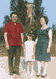

Alvaro (1915-1988)
[imagem histórica não recuperada: ../Foto/Alvaro.jpg] |
Alvaro nasceu no dia 9 de abril de 1915, filho de Enzo Zaniratti e Remira Gavioli. Casou-se com Francesca Saletti; mas não tiveram filhos. Foi professor em Stellata, uma região de Bondeno. Gostava de dançar. Fez juntar a letra "T" que faltava em seu sobrenome, que era - por um erro - Zanirati. Ficou viúvo em 1966, e morreu por enfarte 22 anos depois, no dia 18 de novembro de 1988. |
ÁLBUM: 
Para ampliar a foto clique sobre ela.
[imagem histórica não recuperada: ../MiniEnzoAlvaro.gif (Enzo, Alvaro e sua mulher)]
Árvore |
Pais |
Irmãos e irmãs |
Cônjuge |
Filhos |
Enzo
Zaniratti Remira Gavioli |
> Alvaro
< |
Francesca
Saletti |
X |
FONTES:
Leonida, Ancilla,
Lápide no cemitério de Stellata.
30.12.2004 Página inicial